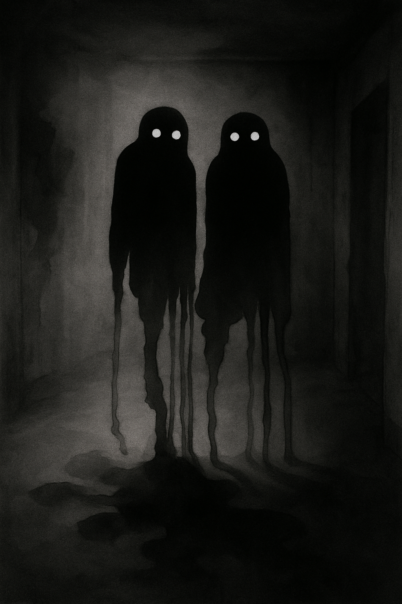
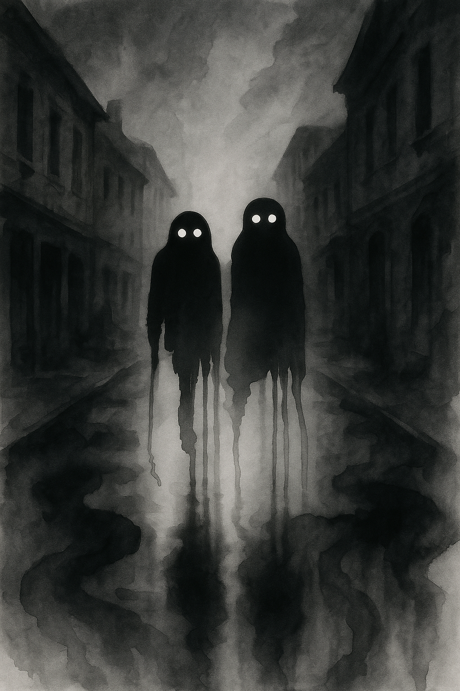
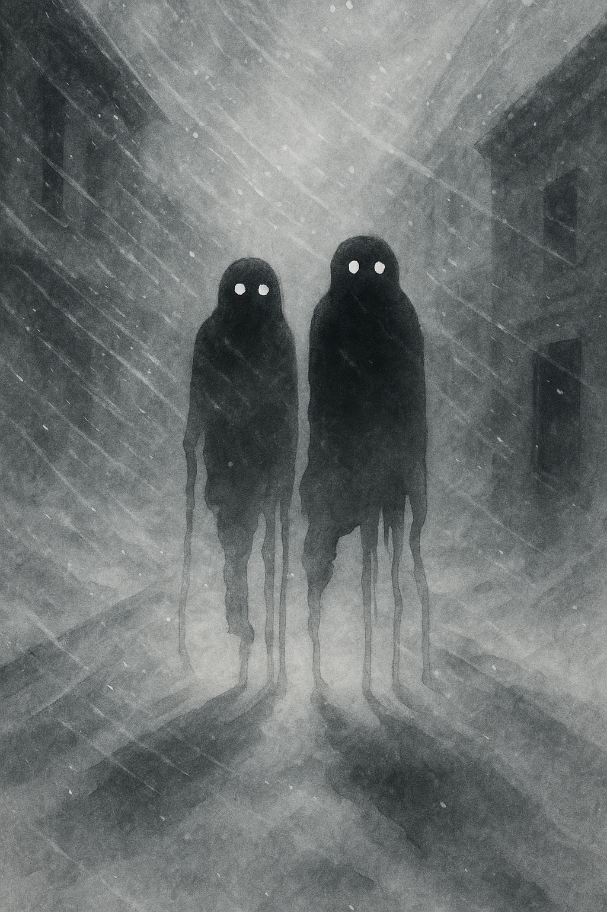

OVERSKRIFT
Underrubrik
Underrubrik
Den usynlige vintertrussel
 Læs mereLær at genkende Mørkegængerne før de finder dig
 Læs mereMørkegængerne truer vinterens sjæle
 Læs mereNår mørket sænker sig over de skandinaviske byer, og gadelygterne blinker svagt i kulden, er der noget i luften...
Mørkegængerne siges at dukke op, hvor lys mangler...
Psykologer beskriver fænomenet som “den usynlige vintertrussel”...
I flere nordiske byer bruges Mørkegænger-myten nu i oplysningskampagner...
“Når vi personificerer mørket, gør vi det lettere at tale om,” siger Eva Holm...
Sådan bekæmpes de: Lys, fællesskab og bevægelse.
Mørket i Norden er mere end fraværet af lys...
Lysterapi, bevægelse og kontakt er de bedste værn.
Når vinteren sænker sig over Skandinavien, vågner mørket til live...
“Mørket er smukt,” siger Linnea Jørgensen, “men det kræver respekt.”